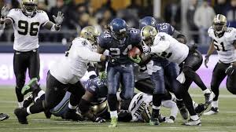
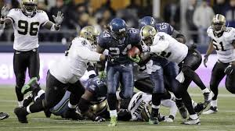

Portfolio


My name is Joshua Brown. I attend Baltimore City College High School. My experience with The Hidden Genius Project has been different. I met new people that come from backgrounds different than my own & we get along nicely. I appreciate The Hidden Genius Project because they're teaching me new things. I am thankful for this opportunity becuase I enjoy learning about computers & technology. I love sports & photography. My favorite football team is the Kansas City Chiefs. My favorite basketball team is the Boston Celtics. My favorite baseball team is the Baltimore Orioles. I like learning & my favorite subject is history. I find it very intresting because I there's so much to learn.
This is my first summer with The Hidden Genius Project & I am enjoying it so far. I wasn't prepared to work as hard everyday, but I'm enjoying it. We're learning a lot & it's been a great experience overall. I appreciate my brothers who motivate me & help me get my work done. They hold me accountable & I do the same for them. I'm grateful for them. I'm also thankful for Asa, Ms. Cydni & Ms.Moriah. They took us on trips, added extra money to our stipends, gave us gifts cards, provided free food & took care of us in general. I'm thankful for the parents that chaperoned our trips as well. My first summer has been really good & I am appreciative of everyone.
I have a number of goals in life that I want to achieve. I would like to buy a BMW for my first car. I plan to sacrifice & buy a cheap car for my first car or wait until I can afford my dream car. I plan to buy my car in my 20s, so I may still be in college. A lot of schools charge students to park or don't allow students to have cars on campus, so it'll depend on their policy. My other dream cars include: My dream cars are a Trackhawk, an Audi R8, a BMW M5, a Urus & a TRX. I want to be a photographer. I've been taking photos since I was 8 or 9 years old. My mother introduced me to it as a child & I've enjoyed doing it ever since. I also want to be a manufacturing engineer. My dream school is LSU. I have a family member who is attends LSU program & is in the engineering program as well. They also have decent sports teams & I would love to play collegiate football or baseball. My favorite position in baseball is Left Field. I'm not sure why, but for some reason I've always loved that position. I also love Third Base. My favorite baseball players are Manny Machado, Ricky Henderson & Bo Jackson. My favorite football positions are Defensive Back, Saftey, Corner & Running Back. I love watching Defensive Backs because of their versatility. The way they lead, read Quarterbacks, Wide Receiver routes & blow up the gap. Some of the best Defensive Backs are Jack Tatum, Ryan Clark, Darrell Revis, Ed Reed, Deion Sanders & Eric Berry. I love watching Running Backs because of the way they run down field and zoom past Line Backers. I also love how they run through gaps that the Offensive Line creates. Defensive Backs aren't scared to tackle either. My favorite basketball players are Tim Duncan, Lebron James, Larry Bird & Kawhi Leonard.


.jpeg)


 
